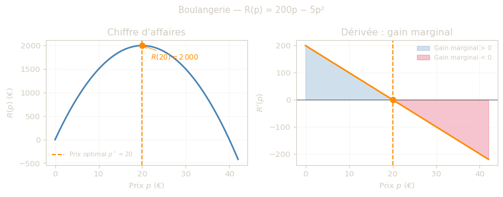
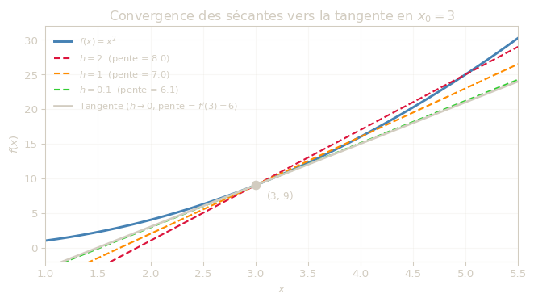
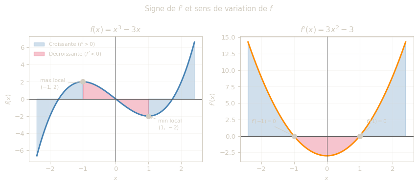

Dérivée d’une fonction univariée
- Comprendre la dérivée d’une fonction univariée
- Savoir calculer et interpréter une dérivée
- Étudier le sens de variation d’une fonction
- Comprendre et calculer l’élasticité
Introduction
Imaginez que vous gérez une boulangerie. Votre chiffre d’affaires quotidien est \(R(p) = 200p - 5p^2\), ou \(p\) est le prix d’une baguette en euros.
Si vous augmentez \(p\) de 1 centime, votre chiffre d’affaires augmente-t-il ou diminue-t-il ? De combien exactement ?
C’est précisément ce que mesure la dérivée : la variation instantanée d’une grandeur par rapport à une autre. Dans cet exemple, \(R'(p)\) indique le gain (ou la perte) de chiffre d’affaires pour une hausse de prix infinitésimale.
Ce module présente les notions fondamentales de dérivation des fonctions univariées et leur interprétation économique.
Exemple économique
Le graphique ci-dessous illustre le cas de la boulangerie : à gauche le chiffre d’affaires \(R(p)\), à droite sa dérivée \(R'(p)\) qui mesure le gain marginal.

Définition de la dérivée
Une fonction \(f\) est dite dérivable en \(x\) si le taux d’accroissement \(\frac{f(x+h)-f(x)}{h}\) admet une limite quand \(h \to 0\).
On définit alors :
\[ f'(x) = \lim_{h \to 0} \frac{f(x+h)-f(x)}{h} \]
Intuition : du taux moyen au taux instantané
Le quotient
\[ \frac{f(x+h)-f(x)}{h} \]
mesure une variation moyenne de \(f\) entre \(x\) et \(x+h\). Quand \(h\) devient très petit, on “zoome” autour de \(x\) : cette variation moyenne tend vers une variation instantanée.
C’est exactement ce que représente la dérivée \(f'(x)\) :
- en géométrie : la pente de la tangente ;
- en économie : un effet marginal (coût marginal, recette marginale, etc.).
Mini-lecture numérique
Pour \(f(x)=x^2\) au point \(x=3\) :
\[ \frac{f(3+h)-f(3)}{h}=\frac{(3+h)^2-9}{h}=6+h \]
Si \(h=1\), on obtient \(7\) ; si \(h=0.1\), on obtient \(6.1\) ; si \(h=0.01\), on obtient \(6.01\). La valeur se rapproche de \(6\), donc \(f'(3)=6\).

À retenir
- On calcule d’abord un taux moyen.
- On fait tendre \(h\) vers 0.
- La limite obtenue est la dérivée (taux instantané).
Exercice interactif — Convergence de h → 0
Utilisez le curseur pour faire varier \(h\) et observez comment la pente de la sécante se rapproche de \(f'(3) = 6\).
#| '!! shinylive warning !!': |
#| shinylive does not work in self-contained HTML documents.
#| Please set `embed-resources: false` in your metadata.
#| standalone: true
#| components: [viewer]
#| viewerHeight: 510
from shiny import App, render, ui
import matplotlib
matplotlib.use('Agg')
import matplotlib.pyplot as plt
import numpy as np
BG = '#1C2E22'
FG = '#D2CCC0'
app_ui = ui.page_fluid(
ui.tags.style(f"""
body {{ background-color: {BG}; color: {FG}; padding: 12px; font-family: sans-serif; margin:0; }}
.form-label {{ color: {FG} !important; }}
.form-range {{ accent-color: steelblue; width: 100%; }}
.info-box {{
background: #152119; border-radius: 6px; padding: 10px 14px;
margin: 8px 0; border-left: 3px solid steelblue;
font-family: monospace; font-size: 0.9em;
}}
"""),
ui.h5("🎯 De la sécante à la tangente", style=f"color:{FG}"),
ui.p(
"Faites varier h pour voir comment la pente de la sécante se rapproche de f'(3) = 6 quand h → 0.",
style=f"color:{FG}; font-size:0.88em; margin-bottom:6px;",
),
ui.input_slider("h", "Valeur de h :", min=0.05, max=3.0, value=2.0, step=0.05),
ui.output_ui("info"),
ui.output_plot("plot", height="340px"),
)
def server(input, output, session):
@output
@render.ui
def info():
h = input.h()
slope = ((3 + h) ** 2 - 9) / h
error = abs(slope - 6)
tick = " ✅ Tres proche !" if error < 0.15 else ""
color = "steelblue" if error < 0.15 else "#e07a5f"
return ui.HTML(f"""
<div class='info-box'>
Pente = (f(3 + {h:.2f}) − f(3)) / {h:.2f}
= <strong style='color:darkorange'>{slope:.4f}</strong><br>
Ecart avec 6 : <strong style='color:{color}'>{error:.4f}</strong>{tick}
</div>
""")
@output
@render.plot
def plot():
h = input.h()
x0, y0 = 3, 9
slope = ((x0 + h) ** 2 - y0) / h
x = np.linspace(0.5, 6.5, 300)
fig, ax = plt.subplots(figsize=(7, 3.8))
fig.patch.set_facecolor(BG)
ax.set_facecolor(BG)
for spine in ax.spines.values():
spine.set_edgecolor(FG)
ax.tick_params(colors=FG)
ax.plot(x, x ** 2, color='steelblue', lw=2.2, label=r'$f(x)=x^2$')
ax.plot(x, y0 + slope * (x - x0), color='darkorange', lw=1.8,
linestyle='--', label=f'Sécante h={h:.2f} (pente={slope:.3f})')
ax.plot(x, y0 + 6 * (x - x0), color=FG, lw=2.0,
label=r"Tangente $h\to0$ (pente = 6)")
ax.scatter([x0, x0 + h], [y0, (x0 + h) ** 2],
color='crimson', zorder=6, s=70)
ax.set_xlim(0.5, 6.5); ax.set_ylim(-5, 45)
ax.set_xlabel("$x$", color=FG); ax.set_ylabel("$f(x)$", color=FG)
ax.set_title(r"Sécante vs tangente en $x_0 = 3$", color=FG)
ax.legend(fontsize=8.5, facecolor=BG, edgecolor='none', labelcolor=FG)
ax.grid(alpha=0.15, color=FG)
plt.tight_layout()
return fig
app = App(app_ui, server)Exemple détaillé : \(f(x)=x^2\)
\[ \begin{aligned} \frac{f(x+h)-f(x)}{h} &= \frac{(x+h)^2-x^2}{h} \\ &= \frac{x^2+2xh+h^2-x^2}{h} \\ &= 2x+h \end{aligned} \]
Donc :
\[ f'(x) = \lim_{h \to 0}(2x+h)=2x \]
Exemples rapides
- \(f(x)=\frac{1}{x} \Rightarrow f'(x)=-\frac{1}{x^2}\)
- \(f(x)=\sqrt{x} \Rightarrow f'(x)=\frac{1}{2\sqrt{x}}, \; x>0\)
Dérivées des fonctions usuelles
| Fonction \(f(x)\) | Dérivée \(f'(x)\) | Condition |
|---|---|---|
| \(k\) | \(0\) | \(k\) constante réelle |
| \(kx\) | \(k\) | \(k\) constante réelle |
| \(x^n\) | \(nx^{n-1}\) | \(n \in \mathbb{N}\) |
| \(\frac{1}{x^n}\) | \(\frac{-n}{x^{n+1}}\) | \(x \neq 0\) |
| \(\sqrt{x}\) | \(\frac{1}{2\sqrt{x}}\) | \(x > 0\) |
| \(e^x\) | \(e^x\) | |
| \(\ln(x)\) | \(\frac{1}{x}\) | \(x>0\) |
- La constante ne varie jamais : \(f(x)=5 \Rightarrow f'(x)=0\).
- La dérivée de \(kx\) est la pente \(k\) : une augmentation de 1 de \(x\) fait varier \(f\) de \(k\) unités.
- La dérivée de \(x^n\) “abaisse l’exposant d’un cran” : \(x^4 \to 4x^3\).
- \(e^x\) est sa propre dérivée : son taux de croissance instantané est égal à sa valeur — propriété remarquable exploitée en finance (actualisation).
La dérivée n’est définie que là où la fonction est définie. Par exemple, \(\ln(x)\) impose \(x > 0\), donc \((\ln(x))' = \frac{1}{x}\) est également valable uniquement pour \(x > 0\).
Toujours préciser le domaine de définition avant de dériver.
Partie 2 - Fonctions composées
Règles de dérivation
| Règle | Formule |
|---|---|
| Somme | \((u+v)' = u' + v'\) |
| Produit | \((uv)' = u'v + uv'\) |
| Quotient | \(\left(\dfrac{u}{v}\right)' = \dfrac{u'v - uv'}{v^2}\) |
| Exponentielle composée | \((e^{u(x)})' = u'(x)\,e^{u(x)}\) |
| Logarithme compose | \((\ln(u(x)))' = \dfrac{u'(x)}{u(x)}\) |
| Puissance composée | \((u(x)^n)' = n\,u'(x)\,u(x)^{n-1}\) |
La règle \((uv)' = u'v + uv'\) est souvent source d’erreurs. Pensez-y ainsi : quand le produit de deux quantités varie, chaque terme contribue tour à tour pendant que l’autre reste fixe. On additionne les deux contributions.
Exemples pas a pas
Règle de la somme : \(f(x) = 4x - e^x\)
On pose \(u(x)=4x\) et \(v(x)=e^x\).
\[ u'(x)=4, \qquad v'(x)=e^x \]
\[ f'(x) = 4 - e^x \]
Règle du produit : \(f(x) = (2x+3)\,e^x\)
On pose \(u(x)=2x+3\) et \(v(x)=e^x\).
\[ u'(x)=2, \qquad v'(x)=e^x \]
\[ f'(x) = u'v + uv' = 2\,e^x + (2x+3)\,e^x = e^x(2x+5) \]
Règle du quotient : \(f(x) = \dfrac{\ln(x)}{2x^2}\)
On pose \(u(x)=\ln(x)\) et \(v(x)=2x^2\).
\[ u'(x)=\frac{1}{x}, \qquad v'(x)=4x \]
\[ f'(x) = \frac{\frac{1}{x}\cdot 2x^2 - \ln(x)\cdot 4x}{(2x^2)^2} = \frac{2x - 4x\ln(x)}{4x^4} = \frac{1 - 2\ln(x)}{2x^3} \]
Exponentielle composée : \(f(x) = e^{2x^2+3x}\)
On pose \(u(x)=2x^2+3x\).
\[ u'(x)=4x+3 \]
\[ f'(x) = u'(x)\,e^{u(x)} = (4x+3)\,e^{2x^2+3x} \]
Logarithme compose : \(f(x) = \ln(4x^2+2)\)
On pose \(u(x)=4x^2+2\).
\[ u'(x)=8x \]
\[ f'(x) = \frac{u'(x)}{u(x)} = \frac{8x}{4x^2+2} = \frac{4x}{2x^2+1} \]
Ne pas confondre \((\ln(x))' = \frac{1}{x}\) et \((\ln(u(x)))' = \frac{u'(x)}{u(x)}\).
Toujours verifier si l’argument du \(\ln\) est une expression composée, et si oui, multiplier par sa dérivée.
Partie 3 - Interprétation de la dérivée
Interprétation géométrique
La dérivée \(f'(a)\) représente la pente de la tangente à la courbe de \(f\) au point d’abscisse \(a\).
Approximation locale utile
Pres d’un point \(a\), on peut approximer :
\[ f(a+h) \approx f(a) + f'(a)h \]
Cette formule donne une lecture pratique : \(f'(a)\) indique la variation attendue de \(f\) pour une petite variation de la variable.
Sens de variation
- Si \(f'(x)>0\), la fonction est croissante.
- Si \(f'(x)<0\), la fonction est décroissante.
- Si \(f'(x)=0\), \(x\) est un point critique.

Exercice interactif — Explorer le sens de variation
Choisissez une fonction et observez comment le signe de \(f'\) détermine la croissance ou la décroissance de \(f\).
#| '!! shinylive warning !!': |
#| shinylive does not work in self-contained HTML documents.
#| Please set `embed-resources: false` in your metadata.
#| standalone: true
#| components: [viewer]
#| viewerHeight: 490
from shiny import App, render, ui
import matplotlib
matplotlib.use('Agg')
import matplotlib.pyplot as plt
import numpy as np
BG = '#1C2E22'
FG = '#D2CCC0'
FUNCTIONS = {
"f(x) = x² − 4x (profit)": {
"f": lambda x: x**2 - 4*x,
"fp": lambda x: 2*x - 4,
"xlim": (-1.0, 6.0),
"title_f": r"$f(x)=x^2-4x$",
"title_fp": r"$f'(x)=2x-4$",
"zeros": [2],
},
"f(x) = x³ − 3x (cubique)": {
"f": lambda x: x**3 - 3*x,
"fp": lambda x: 3*x**2 - 3,
"xlim": (-2.4, 2.4),
"title_f": r"$f(x)=x^3-3x$",
"title_fp": r"$f'(x)=3x^2-3$",
"zeros": [-1, 1],
},
"f(x) = −x² + 6x (recette max)": {
"f": lambda x: -x**2 + 6*x,
"fp": lambda x: -2*x + 6,
"xlim": (-1.0, 8.0),
"title_f": r"$f(x)=-x^2+6x$",
"title_fp": r"$f'(x)=-2x+6$",
"zeros": [3],
},
}
app_ui = ui.page_fluid(
ui.tags.style(f"""
body {{ background-color:{BG}; color:{FG}; padding:12px;
font-family:sans-serif; margin:0; }}
.form-label {{ color:{FG} !important; }}
.form-select {{ background-color:#152119; color:{FG}; border-color:#2F4636; }}
"""),
ui.h5("📈 Signe de f' et sens de variation", style=f"color:{FG}"),
ui.p(
"Sélectionnez une fonction et observez le lien entre le signe de f' "
"et la croissance / décroissance de f.",
style=f"color:{FG}; font-size:0.88em; margin-bottom:6px;",
),
ui.input_select("func", "Fonction :", choices=list(FUNCTIONS.keys())),
ui.output_plot("plot", height="380px"),
)
def server(input, output, session):
@output
@render.plot
def plot():
cfg = FUNCTIONS[input.func()]
x = np.linspace(*cfg["xlim"], 400)
f = cfg["f"](x)
fp = cfg["fp"](x)
fig, (ax1, ax2) = plt.subplots(1, 2, figsize=(9, 3.8))
fig.patch.set_facecolor(BG)
for ax in (ax1, ax2):
ax.set_facecolor(BG)
for spine in ax.spines.values():
spine.set_edgecolor(FG)
ax.tick_params(colors=FG)
ax.axhline(0, color='#5a5a5a', lw=0.8)
ax.axvline(0, color='#5a5a5a', lw=0.8)
ax1.plot(x, f, color='steelblue', lw=2.2)
ax1.fill_between(x, f, 0, where=(fp > 0), alpha=0.28,
color='steelblue', label="Croissante (f' > 0)")
ax1.fill_between(x, f, 0, where=(fp < 0), alpha=0.28,
color='crimson', label="Décroissante (f' < 0)")
ax1.set_title(cfg["title_f"], color=FG)
ax1.set_xlabel("$x$", color=FG); ax1.set_ylabel("$f(x)$", color=FG)
ax1.legend(fontsize=8, facecolor=BG, edgecolor='none', labelcolor=FG)
ax1.grid(alpha=0.15, color=FG)
ax2.plot(x, fp, color='darkorange', lw=2.2)
ax2.fill_between(x, fp, 0, where=(fp > 0), alpha=0.28, color='steelblue')
ax2.fill_between(x, fp, 0, where=(fp < 0), alpha=0.28, color='crimson')
for z in cfg["zeros"]:
ax2.scatter([z], [0], color=FG, zorder=6, s=60)
ax2.set_title(cfg["title_fp"], color=FG)
ax2.set_xlabel("$x$", color=FG); ax2.set_ylabel("$f'(x)$", color=FG)
ax2.grid(alpha=0.15, color=FG)
plt.suptitle("Signe de f' \u21d4 sens de variation de f", color=FG, fontsize=10)
plt.tight_layout()
return fig
app = App(app_ui, server)Exercices
- Calculer les dérivées de \(3x^2\), \(5x^3-2x\), et \(\frac{1}{x}\).
- Étudier le sens de variation de \(f(x)=x^3-3x\).
- Calculer \(f'(2)\) pour \(f(x)=4x^4-3x^2+7\).
Exercices supplémentaires (issus du support)
- Dériver et donner le domaine de définition :
- \(f(x)=5\)
- \(g(x)=5x\)
- \(h(x)=-7x+2\)
- \(k(x)=5x^2+8x-3\)
- Dériver les fonctions composées :
- \(f(x)=(x-2)(2x+5)\)
- \(g(x)=x(3x-2)\)
- \(h(x)=\dfrac{\ln(x)}{2x^2}\)
- Étudier les variations de :
- \(u(x)=x^2-2x-3\)
- \(v(x)=\dfrac{1}{x}\)
- \(w(x)=e^{2x^2+3x}\)
Exercice interactif — Quiz de dérivation
Testez vos reflexes : une fonction s’affiche, choisissez la bonne dérivée et recevez un retour immédiat.
#| '!! shinylive warning !!': |
#| shinylive does not work in self-contained HTML documents.
#| Please set `embed-resources: false` in your metadata.
#| standalone: true
#| components: [viewer]
#| viewerHeight: 430
from shiny import App, render, ui, reactive
import random
BG = '#1C2E22'
FG = '#D2CCC0'
QUESTIONS = [
{
"func": "f(x) = 5",
"correct": "f'(x) = 0",
"choices": ["f'(x) = 0", "f'(x) = 5", "f'(x) = 1", "f'(x) = 5x"],
"hint": "La dérivée d'une constante est toujours zéro.",
"rule": "Constante",
},
{
"func": "f(x) = 3x",
"correct": "f'(x) = 3",
"choices": ["f'(x) = 3x²", "f'(x) = 3", "f'(x) = x", "f'(x) = 1/3"],
"hint": "La dérivée de kx est k : c'est la pente de la droite.",
"rule": "Linéaire",
},
{
"func": "f(x) = x⁴",
"correct": "f'(x) = 4x³",
"choices": ["f'(x) = 4x⁵", "f'(x) = x³", "f'(x) = 4x³", "f'(x) = 4"],
"hint": "Règle puissance : (xⁿ)' = n·xⁿ⁻¹. Ici n=4.",
"rule": "Puissance",
},
{
"func": "f(x) = eˣ",
"correct": "f'(x) = eˣ",
"choices": ["f'(x) = eˣ⁻¹", "f'(x) = x·eˣ", "f'(x) = eˣ", "f'(x) = 1"],
"hint": "L'exponentielle est sa propre dérivée : (eˣ)' = eˣ.",
"rule": "Exponentielle",
},
{
"func": "f(x) = ln(x)",
"correct": "f'(x) = 1/x",
"choices": ["f'(x) = 1/x", "f'(x) = x", "f'(x) = ln(x)/x", "f'(x) = eˣ"],
"hint": "(ln x)' = 1/x, valable pour x > 0.",
"rule": "Logarithme",
},
{
"func": "f(x) = e^(3x)",
"correct": "f'(x) = 3e^(3x)",
"choices": ["f'(x) = e^(3x)", "f'(x) = 3e^(3x)", "f'(x) = 3xe^(3x)", "f'(x) = e^(3)"],
"hint": "Exponentielle composée : (e^u)' = u'·e^u. Ici u=3x donc u'=3.",
"rule": "Exp. composée",
},
{
"func": "f(x) = ln(2x² + 1)",
"correct": "f'(x) = 4x / (2x² + 1)",
"choices": [
"f'(x) = 1 / (2x² + 1)",
"f'(x) = 4x / (2x² + 1)",
"f'(x) = 4x · ln(2x² + 1)",
"f'(x) = 2x / (2x² + 1)",
],
"hint": "Log. compose : (ln u)' = u'/u. Ici u=2x²+1 donc u'=4x.",
"rule": "Log. compose",
},
{
"func": "f(x) = (2x + 3)·eˣ",
"correct": "f'(x) = (2x + 5)·eˣ",
"choices": [
"f'(x) = 2·eˣ",
"f'(x) = (2x + 3)·eˣ",
"f'(x) = (2x + 5)·eˣ",
"f'(x) = 2(x + 3)·eˣ",
],
"hint": "Règle du produit : (uv)' = u'v + uv'. Ici u=2x+3, v=eˣ.",
"rule": "Produit",
},
]
# Randomise once at startup
_order = list(range(len(QUESTIONS)))
random.shuffle(_order)
app_ui = ui.page_fluid(
ui.tags.style(f"""
body {{ background-color:{BG}; color:{FG}; padding:14px;
font-family:sans-serif; margin:0; }}
.btn-choice {{
display:block; width:100%; margin:5px 0;
background:#152119; color:{FG};
border:1px solid #2F4636; border-radius:6px;
padding:8px 14px; cursor:pointer; font-size:0.9em;
text-align:left;
}}
.btn-choice:hover {{ background:#253A2C; }}
.feedback {{ border-radius:6px; padding:10px 14px; margin-top:10px;
font-size:0.9em; }}
.correct {{ background:#1a3a1a; border-left:4px solid #4caf50; }}
.wrong {{ background:#3a1a1a; border-left:4px solid #e53935; }}
.score {{ font-size:0.85em; color:#aaa; margin-bottom:6px; }}
.rule-tag {{ font-size:0.75em; color:#888; margin-bottom:8px; }}
"""),
ui.h5("🧠 Quiz — Quelle est la dérivée ?", style=f"color:{FG}"),
ui.output_ui("score_line"),
ui.output_ui("question_ui"),
ui.output_ui("feedback_ui"),
ui.div(
ui.input_action_button("next_q", "Question suivante →",
style="margin-top:10px; background:#253A2C; "
"color:#D2CCC0; border:1px solid #2F4636; "
"border-radius:6px; padding:7px 18px; cursor:pointer;"),
),
)
def server(input, output, session):
idx = reactive.Value(0)
answered = reactive.Value(False)
chosen = reactive.Value(None)
score = reactive.Value(0)
total_done = reactive.Value(0)
def current_q():
return QUESTIONS[_order[idx() % len(_order)]]
@output
@render.ui
def score_line():
done = total_done()
if done == 0:
return ui.p("Répondez aux questions pour voir votre score.",
class_="score")
pct = round(100 * score() / done)
return ui.HTML(
f"<p class='score'>Score : {score()} / {done} ({pct}%)</p>"
)
@output
@render.ui
def question_ui():
q = current_q()
choices_html = "".join(
f"<button class='btn-choice' onclick=\"Shiny.setInputValue('choice','{c}',{{priority:'event'}})\">{c}</button>"
for c in q["choices"]
)
return ui.HTML(
f"<p class='rule-tag'>Règle : {q['rule']}</p>"
f"<p><strong>Donnez la dérivée de</strong> "
f"<code style='font-size:1em;'>{q['func']}</code></p>"
+ choices_html
)
@output
@render.ui
def feedback_ui():
if not answered():
return ui.HTML("")
q = current_q()
if chosen() == q["correct"]:
return ui.HTML(
f"<div class='feedback correct'>"
f"✅ <strong>Correct !</strong><br>{q['hint']}</div>"
)
return ui.HTML(
f"<div class='feedback wrong'>"
f"❌ <strong>Incorrect.</strong> Bonne réponse : "
f"<em>{q['correct']}</em><br>{q['hint']}</div>"
)
@reactive.Effect
@reactive.event(input.choice)
def _on_choice():
if answered():
return
c = input.choice()
q = current_q()
answered.set(True)
chosen.set(c)
total_done.set(total_done() + 1)
if c == q["correct"]:
score.set(score() + 1)
@reactive.Effect
@reactive.event(input.next_q)
def _on_next():
idx.set(idx() + 1)
answered.set(False)
chosen.set(None)
app = App(app_ui, server)Conclusion
La dérivée mesure une variation marginale. Elle constitue un outil central pour l’analyse économique, la modélisation et la décision.